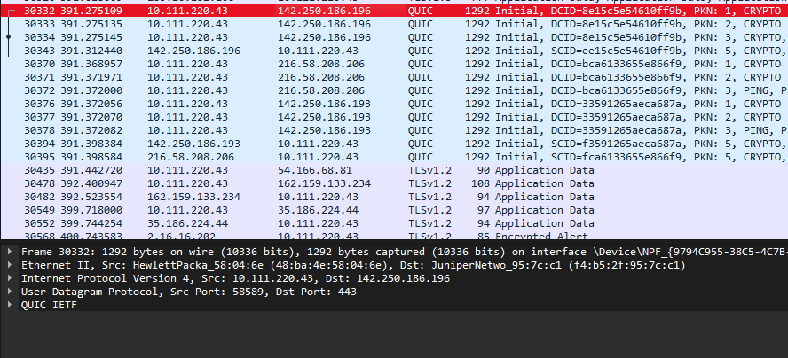
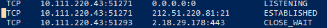
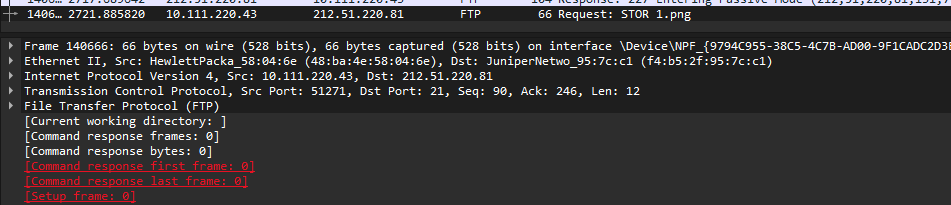
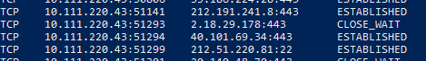
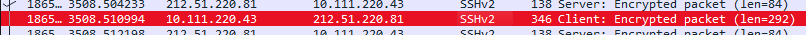
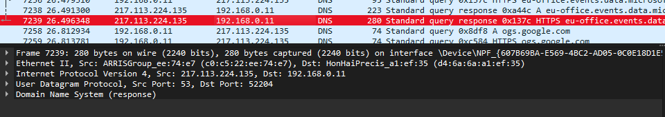

TCP (Transmission Control Protocol) is a connection-oriented communication protocol that is used to ensure reliable data transmission between devices over a network. It guarantees that data packets arrive at their destination in the correct order and without errors. TCP is commonly used for applications where reliability is crucial, such as web browsing (HTTP), email (SMTP), and file transfer (FTP).
| Source Port | Destination Port |
| Sequence Number |
| Acknowledgment Number |
| Data Offset |Reserved| Flags | Window Size |
| Checksum | Urgent Pointer |
| Options (if any) and Padding |
| Data |
TCP protocol has several key parameters that govern its behavior:
Checksum is an inverted sum of parts:
Flags: 00000010 (binary)
||||||||
|||||||+-- FIN: Not set
||||||+--- SYN: Set (1)
|||||+---- RST: Not set
||||+----- PSH: Not set
|||+------ ACK: Not set
||+------- URG: Not set
URG: It is used to incdicate that urgent data is to processed by the system imidietly (with skipping buffor) like emergency signals. Data is indicated by URG pointer later in header.
ACK: Is used to acknowledge SYN request in the three way handshake. It means that in the Ack part, will be next part of sequence recieved.
PSH: It is used to make system process data imidietly but unlike URG it does it with the whole packet
RST: It is used when it is needed to terminate a connection imidietly whith droping of all sent data. It is used in wrongly made connections (ex. in 3 way handshake), as a response to trying to connect to unused port, to indicate a crash or as a security response to attacks
SYN: It is used int 3 way handshake to indicate that it has a Sequence number in its header part
The three-way handshake is the process by which a TCP connection is established between a client and server:
Four-way handshake is the process allowing for orderly closure of the connection between client and server.
UDP (User Datagram Protocol) is a connectionless communication protocol. Unlike TCP, UDP does not establish a connection before sending data and does not guarantee the delivery of packets. It is faster than TCP but less reliable. UDP is commonly used in applications that prioritize speed over reliability, such as video streaming, online gaming, and DNS lookups.
UDP has fewer parameters than TCP because it is connectionless. Key parameters include:
Below is the captured data showing the ports used during the connection to www.google.com:
Captured data showing ports used during file transfer to the server via FTP:
 Captured data showing ports used during file transfer to the server via SCP/SFTP:
 Captured data showing the protocol and port used by DNS in the transport layer:
